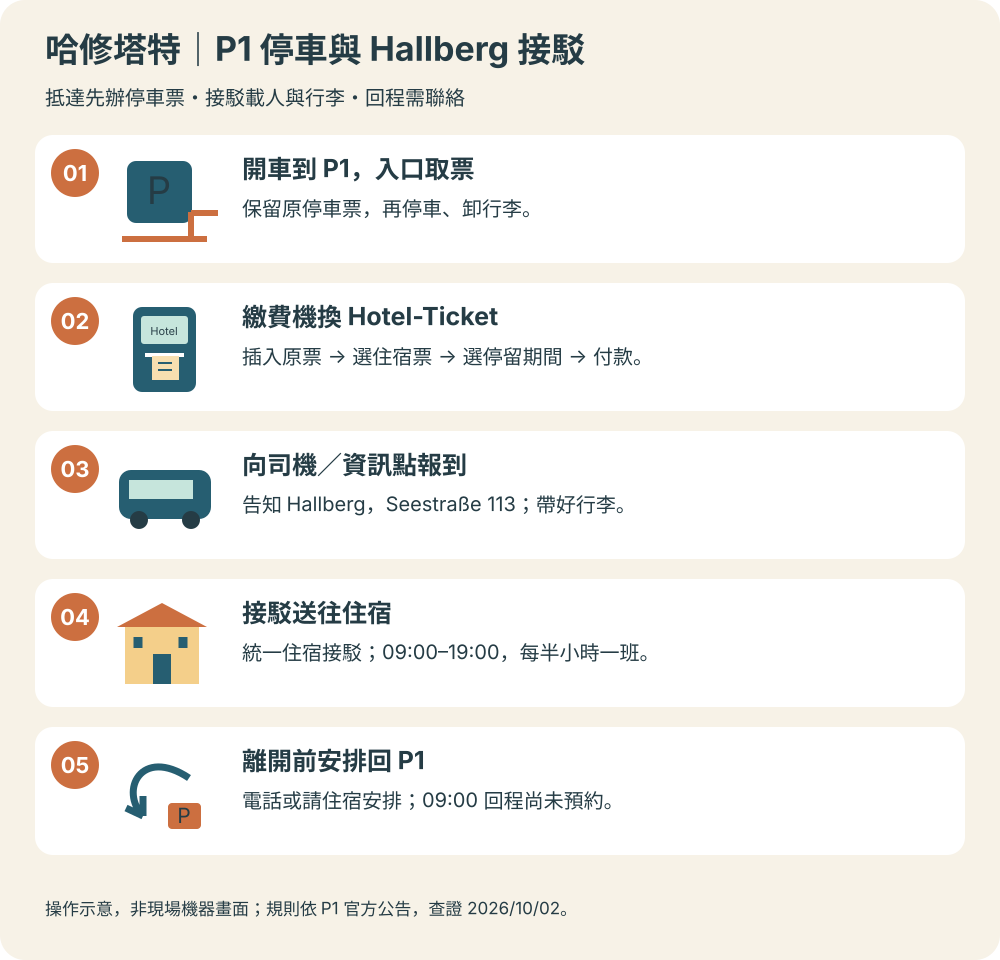

住宿接駁09:00–19:00每日每半小時一班；車不在 P1 可電話聯絡。換票位置P1 繳費機Hotel-Ticket 是住宿停車票，接駁包含在內，停車另付費。回程安排提前聯絡電話或請住宿安排。Hallberg 適用 P1 接駁，非自家專車。
依據：P1 接駁與換票、Hallberg 官方觀光資料。

現場機器｜看這幾個字
| 標示 | 你要做的事 |
|---|
| P1 | 住宿旅客接駁的起點。導航 P1。 |
| KASSA | 付款／繳費處。官方步驟為插原票、選 Hotel-Ticket、選停留期間、付款換票；介面以現場為準。 |
| Hotel-Ticket | 選能涵蓋 10/11 中午至 10/12 下午的期間，避免只按「住宿一晚」猜票種。官方要求第一次開車駛出 P1 前完成換票；建議抵達即辦。 |
| Info-Point／司機 | 告知「Hallberg, Seestraße 113」。手機備妥訂房確認；官方未明列是否需出示。 |
換票程序依 P1 官方說明；提前換票與備妥訂房確認為建議。
2026 費率｜每車計算
| 住宿票期間 | 官方公告 |
|---|
| 第 1 天 | €20 |
| 第 2 天 | €18 |
| 遺失票券 | €40，原票與換發票都保管好。 |
依 P1 2025/26 費率頁的 2026/01/01 起價格。官方未在此頁解釋跨日計算；若現場判定需兩個計費日，合計 €38，不視為已確認的本次總價。
中文文章哪些可以用？哪些要更新？
| 中文文章資訊 | 這次採用方式 |
|---|
| 入口、付款處、車輛照片 | 作辨識參考；部分照片為 2019 年，非現行機器操作截圖。 |
| 舊接駁時段與晚間服務 | 採官方 09:00–19:00；時段外需另叫計程車，不承諾 20:00 仍有接駁。 |
| 舊價與優惠描述 | 官方目前仍公布 Hotel-Ticket 與分日費率，不能理解為住宿票已取消。 |
| 免費接、送各一次 | 文章的旅客經驗；官方現行頁未明列次數限制。這次安排抵達一趟、離開一趟，不把接駁當全天交通。 |
對照：小氣少年中文原文、P1 現行接駁規則、現行費率。不能將其他飯店的等車位置直接套用 Hallberg。
現場照片｜開啟作者原圖對照
照片來源：小氣少年；以上連至作者原圖／原文，非本指南現場拍攝。示意流程圖為本專案繪製。
你們的兩天｜只用抵達、離開兩趟
Day 7 · 10/11
約 12:15 抵達 P1 → 停車、換票、卸行李 → 接駁往 Hallberg／城區。若順利可詢問 12:30 班，行程留到 13:00 較穩妥；不是已預約班次。提前寄放位置與方式需住宿確認；若無法寄放，行李留車內、先步行逛城，之後回 P1 取行李再搭抵達接駁入住。
Day 8 · 10/12
前一天聯絡安排 09:00 回 P1 → 行李放回車上 → 步行至纜車站 → 參觀鹽礦 → 午餐 → 下午直接回 P1 取車。09:00 是行程目標，還未確認預約。
接駁聯絡：+43 664 1530625回程報上 Hallberg 名稱、地址、4 位成人與行李，請對方確認時間及實際等車位置。官方未公布 Hallberg 門前的固定上車點。
查看住宿、P1 與纜車相對位置地圖 →